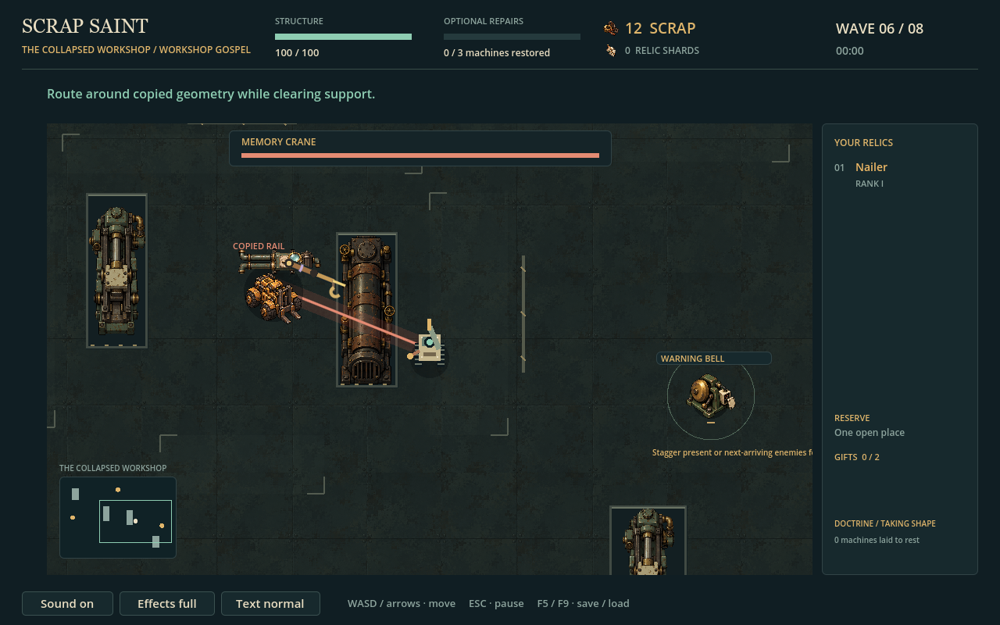

Native gameplay captures at 1280×800, seed 147. Six ordinary enemy families, three optional repair fixtures, and state-driven painted presentations for Memory Crane and Foreman Engine. Existing simulation and attack geometry are preserved.
MEMORY CRANE COPY

The Crane hook points at its authoritative copied hazard. Foreman phases change the press ram, lamps, side hatches, jaws and HUD label. Reduced effects holds the mechanical servo without removing the state silhouette or hazard. Painted majors are deterministic composites of existing generated project art; no bespoke bitmap is claimed. These are configured executable fixtures, not human playtesting.